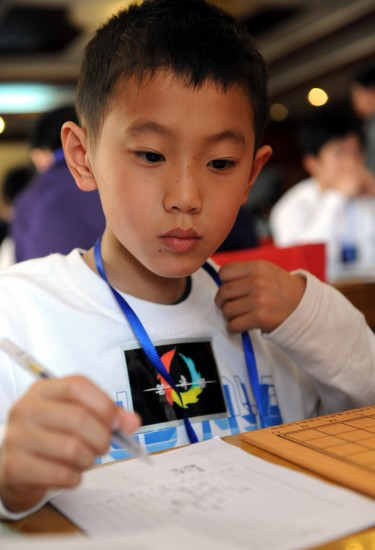

茗弈最小棋手---谢雨晨
首页
少儿五子棋
#1 茗弈最小棋手---谢雨晨 作者：妙玉偷星 发表时间：2010-5-7 22:15:34

5月1日，茗弈棋社队选手谢雨晨在比赛中。当日，2010年全国五子棋团体锦标赛在济南举行，共有24支队伍参加角逐。
新华社记者范长国摄
http://sports.sina.com.cn/o/p/2010-05-01/11174964864.shtml
［此帖子已被 妙玉偷星 在 2010-5-7 22:16:07 编辑过］
#2 Re:茗弈最小棋手---谢雨晨 作者：怪 发表时间：2010-5-8 13:09:27
 这么小就出来混了啊~
这么小就出来混了啊~
#3 Re:茗弈最小棋手---谢雨晨 作者：伤情路 发表时间：2010-5-8 15:50:33
小盆友多少岁啦
#4 Re:茗弈最小棋手---谢雨晨 作者：弱惜 发表时间：2010-5-8 18:25:34
晨晨活泼懂事，人见人爱，我抱了他两次，如果还有机会，我会多抱一会。
#5 Re:茗弈最小棋手---谢雨晨 作者：有志青年 发表时间：2010-5-8 18:27:13
小伙子很帅，且帅的有灵气
#6 Re:茗弈最小棋手---谢雨晨 作者：龙小小 发表时间：2010-5-8 23:20:42
小弟弟好可爱
#7 Re:茗弈最小棋手---谢雨晨 作者：五子痴 发表时间：2010-5-8 23:58:10
有点像剑客
#8 Re:茗弈最小棋手---谢雨晨 作者：也也 发表时间：2010-5-16 11:05:57
汕头 4四才 7岁 还是小女孩。。。
#9 Re:茗弈最小棋手---谢雨晨 作者：听雨练棋 发表时间：2010-6-16 16:56:02
看来偶可以退休了
［ 茗弈小刀 于 2010-6-16 18:03:41 时奖励此帖[金币加 20 威望加1］0
+1
［此帖子已被 茗弈小刀 在 2010-6-16 18:04:07 编辑过］